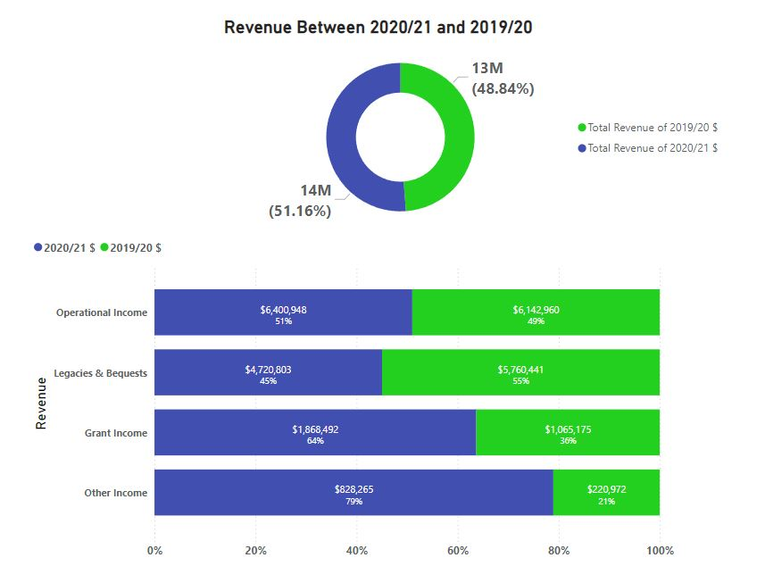

This financial data is sourced directly from AWL's Annual Report. In this project, I have taken the raw financial figures from the report and transformed them into intuitive visualizations.
The goal is to present the data in a clear and comprehensible format, allowing stakeholders to quickly grasp AWL’s financial performance. By leveraging advanced data visualization techniques, the project highlights key metrics such as revenue breakdowns, expense allocations, and the overall financial position.
These visualizations make it easier to identify trends and insights at a glance, providing a more efficient way to understand AWL's financial status.
This graph illustrates the revenue comparison between the financial years 2020/21 and 2019/20, highlighting operational income, legacies, grants, and other income.
This graph highlights the distribution of employee expenses and other operating costs over two financial years.
The total comprehensive income increased by $46,465 compared to the previous year.